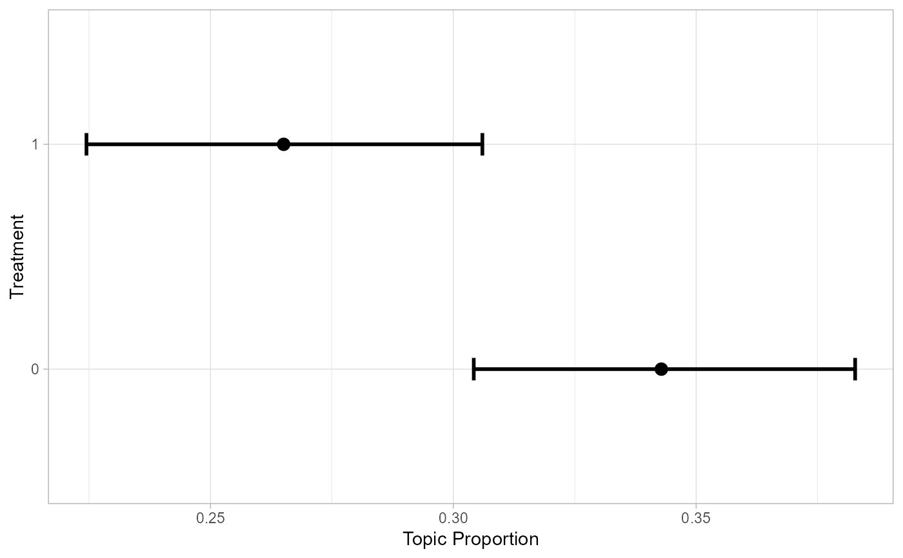

get_effects() is a helper function to store effect estimates from
stm in a data frame.
get_effects(estimates, variable, type, ci = 0.95, moderator = NULL, modval = NULL, cov_val1 = NULL, cov_val2 = NULL)
Arguments
| estimates | The object containing estimates calculated with
|
|---|---|
| variable | The variable for which estimates should be extracted. |
| type | The estimate type. Must be either |
| ci | The confidence interval for uncertainty estimates.
Defaults to |
| moderator | The moderator variable in case you want to include an interaction effect. |
| modval | The value of the moderator variable for an interaction effect. See examples for combining data for multiple values. |
| cov_val1 | The first value of a covariate for type |
| cov_val2 | The second value of a covariate for type |
Value
Returns effect estimates in a tidy data frame.
Examples
library(stm) library(dplyr) library(ggplot2) # store effects prep <- estimateEffect(1:3 ~ treatment + pid_rep, gadarianFit, gadarian) effects <- get_effects(estimates = prep, variable = 'treatment', type = 'pointestimate') # plot effects effects %>% filter(topic == 3) %>% ggplot(aes(x = value, y = proportion)) + geom_errorbar(aes(ymin = lower, ymax = upper), width = 0.1, size = 1) + coord_flip() + theme_light() + labs(x = 'Treatment', y = 'Topic Proportion')# combine estimates for interaction effects prep_int <- estimateEffect(1:3 ~ treatment * s(pid_rep), gadarianFit, gadarian) effects_int <- get_effects(estimates = prep_int, variable = 'pid_rep', type = 'continuous', moderator = 'treatment', modval = 1) %>% bind_rows( get_effects(estimates = prep_int, variable = 'pid_rep', type = 'continuous', moderator = 'treatment', modval = 0) ) # plot interaction effects effects_int %>% filter(topic == 2) %>% mutate(moderator = as.factor(moderator)) %>% ggplot(aes(x = value, y = proportion, color = moderator, group = moderator, fill = moderator)) + geom_line() + geom_ribbon(aes(ymin = lower, ymax = upper), alpha = 0.2) + theme_light() + labs(x = 'PID Rep.', y = 'Topic Proportion', color = 'Treatment', group = 'Treatment', fill = 'Treatment')